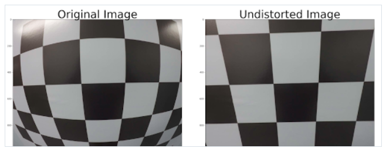
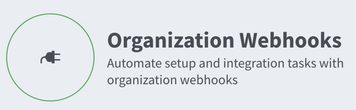

Data Science Snorkeling in Data for Supervision and Generation Let's Start with 'Why?'Most of the preprocessing phase of pipelines has the complexity of taking the unstructured data or the Dark Data like text, Tables, Image, etc, and turning
Image Processing Blue or Green Screen Effect with OpenCV [Chroma keying] Jump to Code with .ipynb Before we get into Chroma keying[ green screen effect ] it’s better to understand the underlying concept that making it possible with Open CV. Colour
 computer-vision Camera Calibration with OpenCV When we talk about camera calibration and Image distortion, we’re talking about what happens when a camera looks at 3D objects in the real world and transforms them into
 Github Automate GitHub Issues status of your organization with Webhooks IntroductionLet’s suppose you are holding an organization which builds products and develop them, you are gonna use GitHub repositories(public/private) to keep all your code or resources safe